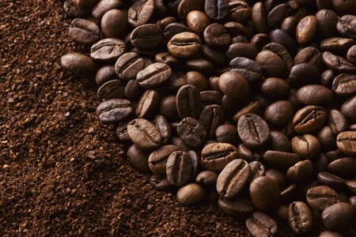
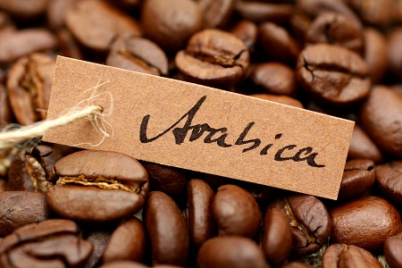
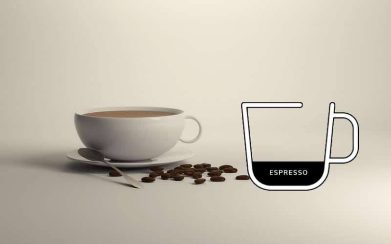
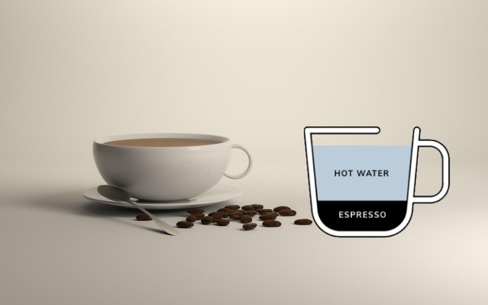
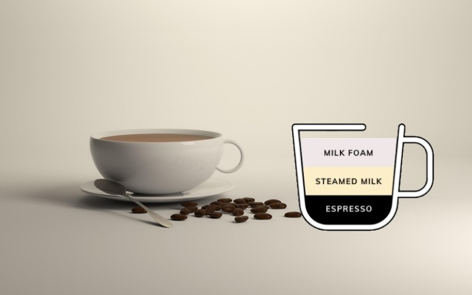
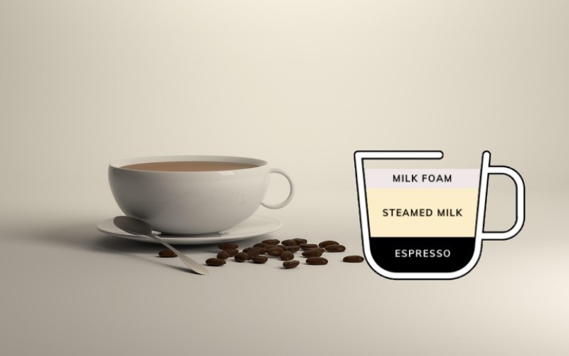
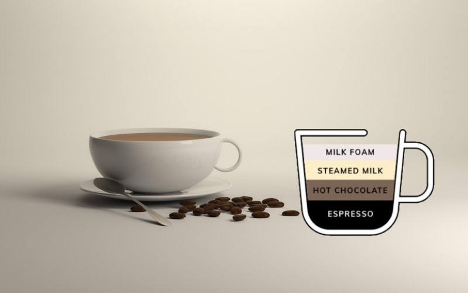

Coffee

Kopi/Coffee adalah minuman hasil seduhan biji kopi yang telah disangrai dan dihaluskan menjadi bubuk.
Kopi merupakan salah satu komoditas di dunia yang dibudidayakan lebih dari 50 negara. Dua spesies
pohon kopi yang dikenal secara umum yaitu Kopi Robusta (Coffea canephora) dan Kopi Arabika (Coffea arabica).
Pemrosesan kopi sebelum dapat diminum melalui proses panjang yaitu dari pemanenan biji kopi yang
telah matang baik dengan cara mesin maupun dengan tangan kemudian dilakukan pemrosesan biji kopi
dan pengeringan sebelum menjadi kopi gelondong. Proses selanjutnya yaitu penyangraian dengan
tingkat derajat yang bervariasi. Setelah penyangraian, biji kopi digiling atau dihaluskan menjadi bubuk kopi sebelum kopi dapat diminum.
Biji Kopi
Dari sekian banyak jenis biji kopi yang dijual di pasaran, hanya terdapat 2 jenis spesies utama,
yaitu kopi arabika (Coffea arabica) dan robusta (Coffea robusta). Masing-masing jenis kopi ini
memiliki keunikannya masing-masing dan pasarnya sendiri.
Biji Kopi Arabika

Kopi arabika merupakan tipe kopi tradisional dengan cita rasa terbaik. Sebagian besar kopi
yang ada dibuat dengan menggunakan biji kopi jenis ini. Kopi ini berasal dari Etiopia dan
sekarang telah dibudidayakan di berbagai belahan dunia, mulai dari Amerika Latin, Afrika Tengah,
Afrika Timur, India, dan Indonesia. Secara umum, kopi ini tumbuh di negara-negara beriklim
tropis atau subtropis. Kopi arabika tumbuh pada ketinggian 600–2000 m di atas permukaan laut.
Tanaman ini dapat tumbuh hingga 3 meter bila kondisi lingkungannya baik. Suhu tumbuh optimalnya
adalah 18-26oC. Biji kopi yang dihasilkan berukuran cukup kecil dan berwarna hijau hingga merah gelap.
Biji Kopi Robusta

Kopi robusta pertama kali ditemukan di Kongo pada tahun 1898. Kopi robusta dapat dikatakan sebagai
kopi kelas 2, karena rasanya yang lebih pahit, sedikit asam, dan mengandung kafeina dalam kadar
yang jauh lebih banyak. Selain itu, cakupan daerah tumbuh kopi robusta lebih luas daripada kopi
arabika yang harus ditumbuhkan pada ketinggian tertentu.Kopi robusta dapat ditumbuhkan dengan
ketinggian 800 m di atas permukaan laut. Selain itu, kopi jenis ini lebih resisten terhadap
serangan hama dan penyakit. Hal ini menjadikan kopi robusta lebih murah. Kopi robusta banyak
ditumbuhkan di Afrika Barat, Afrika Tengah, Asia Tenggara, dan Amerika Selatan.
Coffee Drink
Minuman kopi yang ada saat ini sangatlah beragam jenisnya. Masing-masing jenis kopi yang ada memiliki
proses penyajian dan pengolahan yang unik. Berikut ini adalah beberapa contoh kecil minuman kopi yang umum dijumpai:

Espresso
Untuk membuat espresso, Anda hanya perlu satu shot espresso dalam satu cangkir. Itu saja, tidak ada lagi yang ditambahkan.

Americano
Untuk membuat Americano, Anda harus menuangkan air panas terlebih dahulu. Isi dua pertiga cangkir dengan air panas dan tambahkan satu gelas espresso di atas air panas.

Cappuccino
Untuk membuat cappuccino, ekstrak satu shot espresso ke dalam cangkir. Tambahkan susu kukus dan susu berbusa 3 cm. Taburkan cokelat atau kayu manis di atasnya.

Latte
Untuk membuat ekstrak latte yang sempurna, satu gelas espresso, lalu tuangkan susu kukus ke atasnya. Latte harus memiliki sedikit busa susu di atasnya, yang digunakan untuk membuat "latte art".

Mocha
Untuk membuat mocha yang sempurna, ekstrak satu gelas espresso ke dalam cangkir. Tambahkan satu sendok bubuk cokelat ke dalam espresso dan aduk. Top it up dengan susu kukus dan sekitar 3 cm busa susu. Jika suka, Anda bisa menaburkan bubuk cokelat di atasnya. Nyam!